सुविकल्प: Mine Repurposing Tool
Select factors and sub-factors to discover suitable repurposing options for your mining site
![Coal Controller Organisation emblem]()
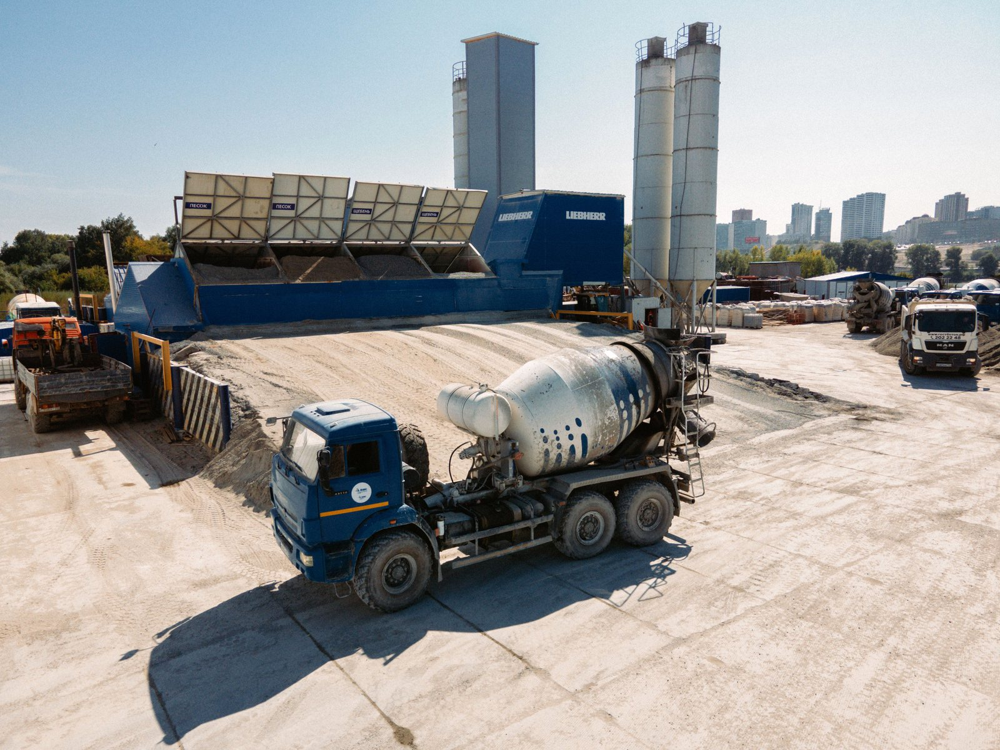
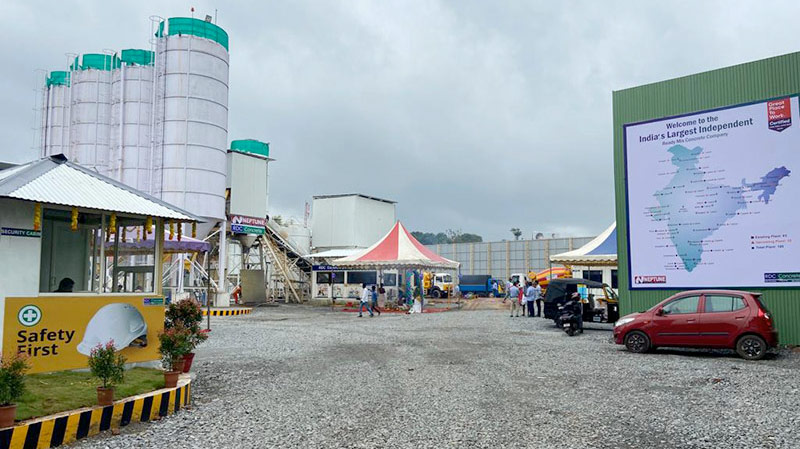
Concrete plants are industrial facilities designed for the production of ready-mix concrete, supporting construction activities such as roads, buildings, and infrastructure projects. In the context of post-mining landscapes, reclaimed mine areas provide a practical and strategic location for establishing such plants, as they offer large, previously disturbed land parcels along with access to existing transport networks, thereby enabling efficient material production and supply for regional development.
The establishment of concrete plants in these areas can generate steady employment and livelihood opportunities for local communities, especially those previously dependent on mining activities, by creating jobs in operations, transportation, maintenance, and support services. However, to ensure successful and sustainable operation, it is important to address challenges such as environmental management, dust and emission control, proper waste handling, and the development of safe and efficient infrastructure, while maintaining compliance with regulatory standards.
Project overview, strategic rationale, site suitability assessment, and indicative concrete plant scale and configuration matrix for closed coal mine areas.
The following matrix provides a structured checklist for assessing the suitability of the proposed site for the selected repurposing option. It identifies the key physical, technical, environmental, infrastructure, legal, and owner-side readiness parameters that should be reviewed before the project is advanced to the next stage of development. The purpose of this matrix is to help the project owner understand existing site conditions, technical requirements, potential constraints, and preparatory actions required before feasibility studies, approvals, or tendering are initiated.
| Assessment Area | Key Parameters | Why It Matters |
|---|---|---|
| Land & Area | 0.5–1.5 ha (captive/mobile), 1–3 ha (RMC), 3–6 ha (RMC+precast), 5+ ha (circular cluster) | Needed for plant, aggregate bins, truck movement, curing, drainage, and green belt |
| Ground Condition | Bearing capacity, reclaimed spoil stability, subsidence risk, waterlogging | Critical for foundations, silos, mixer platform, weighbridge, and heavy truck movement |
| Topography & Access | Slope, drainage, road width, turning radius, flood risk | Affects logistics, concrete dispatch time, vehicle safety, and civil cost |
| Mine Safety | Old workings, unstable ground, subsidence, abandoned structures, hazardous zones | Plant must not be built in unsafe or restricted mine areas |
| Water Supply | Volume, quality, reliability for batching, curing, washing, dust suppression | Concrete production requires assured water supply year-round |
| Power Supply | Connected load, transformer capacity, reliability, backup provision | Batching plant, conveyors, mixers, silos, compressors, lighting all need reliable power |
| Environmental | Dust, noise, wash-water, proximity to settlements, schools, traffic routes | RMC plants sensitive from pollution-control perspective; SPCB consent required |
| Market Proximity | Distance to road, building, railway, industrial, solar/wind foundation demand within 25 km | RMC cannot travel more than 15–25 km; local demand assessment is fundamental |
The following matrix presents an indicative relationship between available site area, project scale, technical configuration, and likely development potential. It is intended to support preliminary planning by helping the project owner identify the appropriate scale and configuration for the proposed repurposing option. The values and recommendations are indicative and should be refined through detailed feasibility studies, site surveys, engineering assessments, and relevant technical and commercial evaluations.
| Project Scale | Typical Production Capacity | Typical Product Mix | Indicative Annual Output Basis | Indicative Area / Mine Asset Basis | Common Configuration | Suitable Technology Direction | Typical Application |
|---|---|---|---|---|---|---|---|
| Demonstration / captive closure support | 5–20 m³/hr | Site concrete for drains, small foundations, fencing, slope works | Site-specific, low-volume | ~0.25–0.75 ha; reclaimed yard or workshop area | Mobile batching plant or compact batching unit | Mobile / compact concrete batching plant | Mine-closure works, internal roads, small civil works |
| Small mine-closure concrete plant | 20–30 m³/hr | Captive concrete + limited local sale | ~25,000–75,000 m³/year depending on utilization | ~0.5–1.5 ha | Compact stationary or mobile RMC plant | Small RMC / captive batching plant | Local construction, mine redevelopment, township works |
| Medium RMC plant | 30–60 m³/hr | RMC for roads, buildings, industrial works | ~75,000–150,000 m³/year depending on utilization | ~1–3 ha | Stationary batching plant with transit mixers | Wet or dry batching RMC plant | Commercial RMC supply within practical dispatch radius |
| Medium RMC + precast plant | 60–90 m³/hr | RMC + paver blocks, kerbs, drains, blocks | ~150,000–250,000 m³/year equivalent plus products | ~2–4 ha | Stationary batching + block / precast line + curing yard | Integrated RMC and concrete-products plant | Mine-region infrastructure, roads, public works |
| Large concrete supply hub | 90–120 m³/hr | RMC, high-volume concrete, precast products | ~250,000–400,000 m³/year depending on demand | ~3–6 ha | Automated stationary plant, silos, lab, fleet yard | RMC + precast + dispatch automation | Regional infrastructure and industrial development |
| Integrated circular concrete cluster | 60–120 m³/hr plus recycling line | RMC, blocks, pavers, kerbs, recycled aggregate products | Site-specific | 5+ ha subject to C&D waste, stockyard, processing and buffer needs | Batching plant + C&D / recycled aggregate processing + products unit | Recycled aggregate concrete / concrete products cluster | Circular economy, municipal linkage, mine redevelopment |
| Large regional construction-materials platform | 120–200 m³/hr | RMC, precast, pavers, pipes, panels, aggregates | Demand-driven | 6+ ha, strong highway and market access required | Multi-line concrete products and RMC hub | Industrial concrete products park | Regional construction supply, PPP / concession model |
Implementation options for concrete plants, comparative assessment of delivery models, and model-wise responsibility logic for mine-owner and developer.
The following table outlines the possible implementation models that may be considered for developing the proposed repurposing project. These models differ in terms of ownership structure, funding responsibility, private sector participation, operational control, and long-term risk allocation. The purpose of this table is to help the project owner compare broad development routes and select an implementation approach that aligns with its financial capacity, institutional preference, risk appetite, and long-term asset management objectives.
| Main Group | Model | Core Feature | Broad Suitability |
|---|---|---|---|
| Owner-led | EPC | Owner funds and owns the concrete plant; contractor designs, supplies, installs, and commissions the plant | Suitable where the mine owner wants full control and has funding capacity |
| Owner-led | EPC + O&M / Facility Management | Owner funds and owns the project; specialist agency operates the plant, dispatch, lab, maintenance, environmental controls, and facility services | Most suitable where owner wants asset control but needs specialist operation and local livelihood delivery |
| Developer-led | BOO | Private developer finances, builds, owns, and operates the concrete plant | Suitable where long-term private ownership is acceptable and market risk is to be shifted |
| Developer-led | BOOT | Private developer finances, builds, owns, and operates during concession period, then transfers the asset | Suitable where eventual transfer to mine owner or authority is preferred |
| Developer-led / PPP | DBFOT | Developer designs, builds, finances, operates, and transfers the asset under structured concession | Suitable for PPP-style mine repurposing with limited upfront owner funding |
| Concession-based | Lease-Develop-Operate | Mine owner leases land / infrastructure to developer, who develops and operates the plant | Suitable where mine owner wants site monetization and livelihood obligations without large CAPEX |
| Hybrid | Mine Closure + Concrete + Precast + Recycled Aggregate Cluster | Combines concrete plant with precast products, C&D waste recycling, mine closure works, and local enterprise development | Suitable where construction-materials redevelopment is a central mine-closure objective |
| Service-based | Concrete Supply-as-a-Service | Developer owns / operates plant and supplies concrete or products to the mine owner under rate contract or service agreement | Suitable where owner wants assured supply without owning plant technology |
The following comparative assessment evaluates the major implementation models across key decision parameters such as investment requirement, ownership control, financing responsibility, contractual complexity, risk transfer, and long-term economic benefit. This matrix is intended to support early-stage decision-making by highlighting the relative strengths and limitations of each model. The final choice of model should be guided by the specific circumstances of the project, including its scale, commercial viability, applicable policy framework, and the owner's institutional preference.
| Evaluation Parameter | EPC | EPC + O&M / FM | BOOT | BOO | DBFOT | Lease-Develop-Operate | Hybrid Concrete + Precast / Recycled Aggregate |
|---|---|---|---|---|---|---|---|
| Upfront investment by Mine Owner | High | High | Low | Low | Low | Low | Moderate to Low depending on structure |
| Need for private financing | Low | Low | High | High | High | High | Moderate to High |
| Ownership retained by Mine Owner from start | Yes | Yes | No | No | No | No, except land ownership | Depends on structure |
| Long-term control over project asset | High | High | Limited during concession | Low | Limited during concession | Moderate through lease terms | Moderate to High if owner-led |
| Suitability where owner already has funds | High | High | Moderate | Low to Moderate | Moderate | Moderate | High |
| Suitability where owner wants to reduce upfront CAPEX | Low | Low | High | High | High | High | High if developer-led |
| Contractual complexity | Moderate | Moderate to High | High | Moderate to High | High | High | High |
| Environmental responsibility clarity | High if owner capable | High if O&M scope is strong | Shared / concession-defined | Developer-heavy | Developer-heavy | Shared through lease | Case-specific |
| Retention of long-term economic benefit by owner | High | High | Deferred / partial | Low | Deferred / partial | Lease / revenue share | Moderate to High |
| Suitability for PPP-style development | Low | Moderate | High | Moderate | Very High | High | High |
| Suitability for owner-led mine-closure asset creation | High | Very High | Low | Low | Low to Moderate | Moderate | High |
| Technology-risk transfer | Low | Moderate | High | High | High | High | Moderate to High |
| Market-risk transfer | Low | Moderate | High | High | High | High | Moderate to High |
| Local livelihood enforceability | High | Very High | High but contract-dependent | Moderate | High if concession conditions are strong | High if lease conditions are strong | Very High |
The following table explains how major project responsibilities are typically allocated under different implementation models. It covers key functional areas such as site availability, financing, design and construction, regulatory approvals, operation and maintenance, revenue collection, asset ownership, and end-of-term transfer. This helps clarify the respective roles of the project owner, private developer, EPC contractor, operator, or concessionaire, and supports the preparation of tender documents and contractual structures.
| Responsibility Area | EPC | EPC + O&M / FM | BOOT | BOO | DBFOT | Lease-Develop-Operate | Hybrid Concrete + Precast / Recycled Aggregate |
|---|---|---|---|---|---|---|---|
| Site / Land Availability | Owner | Owner | Usually owner / authority | Owner / authority or developer depending on arrangement | Owner / authority | Owner leases to developer | Owner / authority / SPV |
| Mine closure compliance | Owner | Owner with O&M support | Shared | Shared / developer as per agreement | Shared | Owner retains closure obligations unless assigned by contract | Shared |
| Site safety due diligence | Owner before bid; contractor validates | Owner before bid; O&M agency supports | Developer validates | Developer validates | Developer validates | Developer validates | Joint |
| Financing | Owner | Owner | Private developer | Private developer | Private developer | Developer / concessionaire | Mixed |
| Design & Construction | EPC contractor | EPC contractor | Developer through EPC contractors | Developer through EPC contractors | Developer / concessionaire | Developer | EPC / developer / hybrid contractor |
| Technology selection | Owner / PMC | Owner / PMC with O&M input | Developer | Developer | Developer | Developer | Joint / SPV |
| Regulatory approvals | Primarily owner, with contractor support | Primarily owner, with contractor and O&M support | Shared | Mostly developer | Mostly developer | Shared | Shared |
| Pollution-control compliance | Owner | O&M contractor under owner oversight | Developer during concession | Developer | Developer during concession | Developer | Operator / SPV |
| O&M | Owner or separate agency | O&M / facility management contractor | Developer during concession | Developer | Developer during concession | Developer | Operator / SPV |
| Quality control and lab | Owner / contractor | O&M contractor under owner oversight | Developer | Developer | Developer | Developer | Operator |
| Revenue collection | Owner | Owner | Developer during concession | Developer | Developer during concession | Developer / revenue share | SPV / owner / developer |
| Asset ownership during term | Owner | Owner | Developer during concession | Developer | Developer during concession | Developer owns movable assets; owner retains land | Case-specific |
| Transfer at end of term | No | No | Yes | No | Yes | Usually no, unless built into lease | Case-specific |
Funding logic, revenue generation by model, livelihood and jobs comparison, and combined revenue-profitability-livelihood assessment for concrete plants.
The following table presents the broad funding logic for each implementation model. It explains who is expected to finance the project, the level of owner-side funding requirement, and the commercial rationale behind each structure. This section is intended to help the project owner assess whether the project is more suitable for owner-funded development, private investment, public-private partnership, lease or concession structure, or a hybrid funding arrangement.
| Model | Primary Funding Source | Owner Funding Requirement | Commercial Logic |
|---|---|---|---|
| EPC | Owner's equity, internal accruals, mine closure fund where permissible, or debt financing | High | Owner directly finances the project and retains complete ownership and long-term economic benefit |
| EPC + O&M / Facility Management | Owner's equity, internal accruals, debt financing, or approved closure-repurposing allocation | High | Owner finances and owns the project while outsourcing specialist operation, quality control, dispatch, pollution-control maintenance, and facility management |
| BOOT | Private developer equity and external project financing | Low | Developer finances, develops, and operates the asset, recovers investment during concession, and transfers the asset later |
| BOO | Private developer equity and external financing | Low | Developer owns and operates the asset and retains long-term revenue |
| DBFOT | Developer equity and debt backed by concession rights, concrete supply agreement, product offtake, or infrastructure demand | Low | Developer assumes design, financing, construction, operation, and transfer obligations |
| Lease-Develop-Operate | Developer equity and debt; mine owner contributes land / infrastructure lease | Low | Developer pays lease, royalty, revenue share, or community development fee while monetizing concrete and product sales |
| Concrete Supply-as-a-Service | Service provider equity and working capital | Low | Developer provides concrete or precast products under service-fee, rate contract, or guaranteed supply arrangement |
| Hybrid Concrete + Precast / Recycled Aggregate | Combination of owner equity, developer financing, municipal linkage, infrastructure offtake, and possible circular-economy support | Moderate to Low depending on structure | Product diversification improves commercial value and local employment potential |
The following table explains how revenue may be generated under different implementation models and identifies who is likely to receive the principal project income. It also describes the nature and extent of the financial benefit available to the project owner, whether through direct project revenue, cost savings, lease income, concession fees, revenue sharing, service charges, or eventual asset transfer. This comparison is intended to support the selection of a commercially appropriate model for the proposed repurposing project.
| Model | How Revenue is Generated | Who Receives Main Revenue | Owner's Financial Benefit |
|---|---|---|---|
| EPC | Sale of RMC, captive savings, supply to mine-closure works, precast product sales, infrastructure contracts | Owner | Full economic benefit from concrete operation and asset ownership |
| EPC + O&M / Facility Management | Same as EPC, net of O&M and facility management payments | Owner | High benefit, with reduced operational burden |
| BOOT | Concrete and product sales, supply agreements, infrastructure offtake, concession revenue | Developer during concession | Deferred or partial benefit through concession fee, lease income, revenue share, and eventual transfer |
| BOO | Long-term concrete and products revenue by private developer | Developer | Limited direct benefit, generally through lease, royalty, negotiated revenue share, or local development obligations |
| DBFOT | Contracted concrete supply, commercial sales, public infrastructure supply, precast product sales | Developer / concessionaire during concession | Benefit through concession payments, avoided CAPEX, asset transfer, and local redevelopment |
| Lease-Develop-Operate | Concrete sales earned by developer; lease rent or revenue share to mine owner | Developer, with negotiated share to owner | Land monetization without large investment |
| Concrete Supply-as-a-Service | Service fee, rate contract, assured supply, project-based concrete delivery | Service provider | Benefit through avoided CAPEX and assured supply |
| Hybrid Concrete + Precast / Recycled Aggregate | RMC, blocks, pavers, kerbs, drains, recycled aggregate products, mine-closure materials | SPV / owner / developer depending on structure | Can be high if owner retains stake or revenue share |
The following table assesses the likely local livelihood and employment potential of each implementation model. It considers the extent to which each model can support construction-phase jobs, long-term operational employment, local procurement opportunities, skill development, community participation, and associated support services. This section is particularly relevant where the repurposing project is expected to contribute to post-mining or post-operational economic transition and sustained local community benefit.
Concrete plant projects can be attractive for mine-closure livelihood because they require plant operators, batch controllers, quality technicians, laboratory assistants, transit mixer drivers, mechanics, electricians, welders, loaders, security staff, housekeeping, weighbridge operators, dispatch staff, stockyard workers, precast mould workers, curing-yard workers, vehicle maintenance workers, and environmental monitoring staff.
Mine workers and local youth can be reskilled for batching operations, mechanical maintenance, electrical maintenance, safety, dispatch, product handling, vehicle operations, and concrete-product manufacturing.
| Model | Local Job Potential | Why | Overall Suggestibility for Local Livelihood |
|---|---|---|---|
| EPC | Moderate | Creates local jobs mainly during civil works, plant installation, material handling, security, and short-term construction | Moderate |
| EPC + O&M / Facility Management | Very High | Creates construction jobs plus long-term plant operation, lab testing, dispatch, maintenance, stockyard, dust-control, housekeeping, security, and facility management. Owner can directly enforce local hiring and training clauses | Very High / Most Suitable |
| BOOT | High | Creates construction and operational jobs during the concession period, but local benefit depends on concession obligations | High, but less controllable than EPC + O&M |
| BOO | Moderate to High | Generates employment in construction and operation, but local outcomes depend on private owner practices | Moderate |
| DBFOT | High | Can create long-term operational jobs if concession includes local employment, skill development, product diversification, and facility management obligations | High |
| Lease-Develop-Operate | High | Mine owner can include local hiring, training, site upkeep, security, environmental compliance, and community benefit obligations in the lease | High |
| Concrete Supply-as-a-Service | Moderate | Usually strong in technical operation but may have narrower local staffing unless specified | Moderate |
| Hybrid Concrete + Precast / Recycled Aggregate | Very High | Combines RMC, precast, paver blocks, aggregate handling, C&D / recycled material processing, curing, dispatch, vehicle operations, and local enterprise support | Very High |
The following combined comparison brings together three important dimensions of project structuring: revenue potential, owner-side financial benefit, and local livelihood generation. It provides a consolidated view of how each implementation model performs across commercial, institutional, and community-development perspectives. This matrix is intended to support balanced decision-making where the objective extends beyond financial return to include sustainable site reuse and long-term local economic benefit.
| Model | Main Revenue / Value Source | Owner Profitability | Local Job Creation Potential | Overall Comment |
|---|---|---|---|---|
| EPC | RMC sale, captive savings, mine-closure concrete, precast products | High, since owner retains full value and asset ownership, but requires high upfront investment | Moderate | Suitable where owner has funds and wants full control |
| EPC + O&M / Facility Management | Same as EPC, with specialist operation and facility management | High, as owner retains most benefit after O&M charges | Very High | Most suitable where objective is to combine ownership, profitability, compliance control, and local livelihood |
| BOOT | Concrete sales, product sale, infrastructure supply, concession value | Moderate, as owner benefit is deferred through transfer, lease, concession fee, or revenue share | High | Suitable for PPP-style development where upfront owner funding is limited |
| BOO | Long-term concrete-related revenue by private developer | Low to Moderate, since most operating value goes to developer | Moderate to High | Suitable where private ownership is acceptable and owner wants site monetization |
| DBFOT | Contracted supply, commercial sales, public infrastructure offtake, product sales | Moderate, through concession value, transfer, and negotiated share | High | Suitable for structured concession where technology, market, and financing risks are shifted |
| Lease-Develop-Operate | Lease rent, royalty, revenue share, developer concrete revenue | Moderate, with low owner investment | High | Good where owner wants mine-asset monetization and local employment obligations |
| Concrete Supply-as-a-Service | Service fee, assured supply, rate contract, project-based concrete supply | Low to Moderate, mainly through avoided CAPEX and assured supply | Moderate | Suitable where owner wants benefits without owning plant |
| Hybrid Concrete + Precast / Recycled Aggregate | RMC, precast products, recycled aggregate products, mine-closure materials | Moderate to High depending on ownership | Very High | Strong construction-materials redevelopment model for closed mine assets |
Pre-RFP preparation checklist, post-award activity scope, and indicative implementation pathway for concrete plant development on mine closure sites.
The following section identifies the key owner-side preparatory actions that should ideally be completed before issuing the first Request for Proposal. These actions are aimed at reducing uncertainty for prospective bidders, improving project bankability, clarifying site availability, identifying approval pathways and risks, and defining the technical and commercial scope of the project. Completing these preparatory steps before tendering can improve bid quality, attract credible responses, and reduce the risk of delays during project implementation.
The following section lists the principal activities that may be undertaken by the selected contractor, developer, concessionaire, operator, or implementation agency after award of the project. These activities generally include detailed site investigations, engineering design, statutory submissions and approvals, equipment procurement, construction, commissioning, operational planning, staff training, and performance monitoring. The distinction between pre-RFP owner preparedness and post-award implementation responsibilities helps ensure an appropriate and efficient allocation of effort across the project development cycle.
The following implementation pathway presents a practical high-level sequence for advancing the proposed repurposing concept from initial approval through to project execution and long-term operation. It outlines the broad stages of concept approval, preliminary studies, model selection, bid preparation, procurement, detailed design, statutory approvals, construction, commissioning, and ongoing operation. This pathway is indicative and should be adapted to reflect the specific complexity, regulatory requirements, financing structure, and site conditions applicable to the project.
Way forward recommendations, key references, and abbreviations for concrete plant and RMC development on mine closure sites.
The following way forward summarizes the preferred development approach for the proposed repurposing option, based on the assessment presented in PRISM (Post Mining Repurposing Implementation and Strategy Models). It identifies the most suitable implementation models in order of preference, highlights key technical and due-diligence considerations, and outlines the recommended next steps and broad development logic. This section is intended to guide internal decision-making and support the project owner in progressing from concept-stage evaluation toward feasibility assessment, project structuring, regulatory approvals, and implementation planning.
Preferred Models, in order: (1) EPC + O&M / Facility Management, (2) DBFOT, (3) Concession / Lease-Develop-Operate, (4) Hybrid
Why preferred: EPC + O&M is preferred where the plant supports mine-closure works and owner-led infrastructure projects. DBFOT or lease models are preferred where private financing, commercial sales and market risk transfer are required.
Secondary option: Hybrid may be used where the owner provides land and anchor demand while a private operator brings batching, precast and market capability.
Suggestable technical care: Material sourcing, aggregate quality, fly ash / slag use, water recycling, dust suppression, wash-water treatment, traffic, noise, certification and product testing must be ensured.
Recommended development logic: Start with a demand and material study for RMC, pavers, blocks, kerbs, drains and mine-closure materials. Scale into precast and recycled aggregate products only where codes, testing and market demand support it.
Final recommendation: EPC + O&M is best for owner-led closure works; DBFOT / Lease-Develop-Operate is better for commercial precast clusters.
Disclaimer — All repurposing interventions proposed under P.R.I.S.M. shall remain subject to applicable mining laws, land-use regulations, environmental approvals, mine-closure conditions, forest and biodiversity regulations, groundwater permissions, and any other statutory approvals as may be applicable. Land ownership is proposed to remain with the mine owner / competent authority unless otherwise permitted under applicable law.
| Abbreviation | Full Form |
|---|---|
| BIS | Bureau of Indian Standards |
| BOOT | Build-Own-Operate-Transfer |
| BOO | Build-Own-Operate |
| C&D | Construction and Demolition |
| CCO | Coal Controller's Organisation |
| CSR | Corporate Social Responsibility |
| DBFOT | Design-Build-Finance-Operate-Transfer |
| DPR | Detailed Project Report |
| EPC | Engineering, Procurement and Construction |
| FM | Facility Management |
| IS | Indian Standard |
| MoC | Ministry of Coal |
| O&M | Operation and Maintenance |
| PMAY | Pradhan Mantri Awas Yojana |
| PMGSY | Pradhan Mantri Gram Sadak Yojana |
| PPP | Public-Private Partnership |
| RFP | Request for Proposal |
| RMC | Ready-Mix Concrete |
| SCADA | Supervisory Control and Data Acquisition |
| SPCB | State Pollution Control Board |
| VGF | Viability Gap Funding |
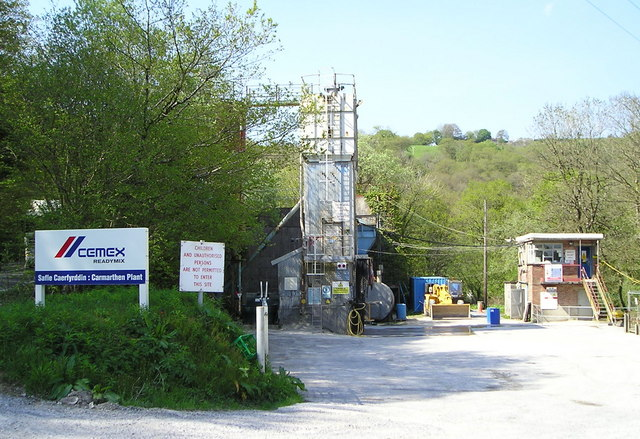
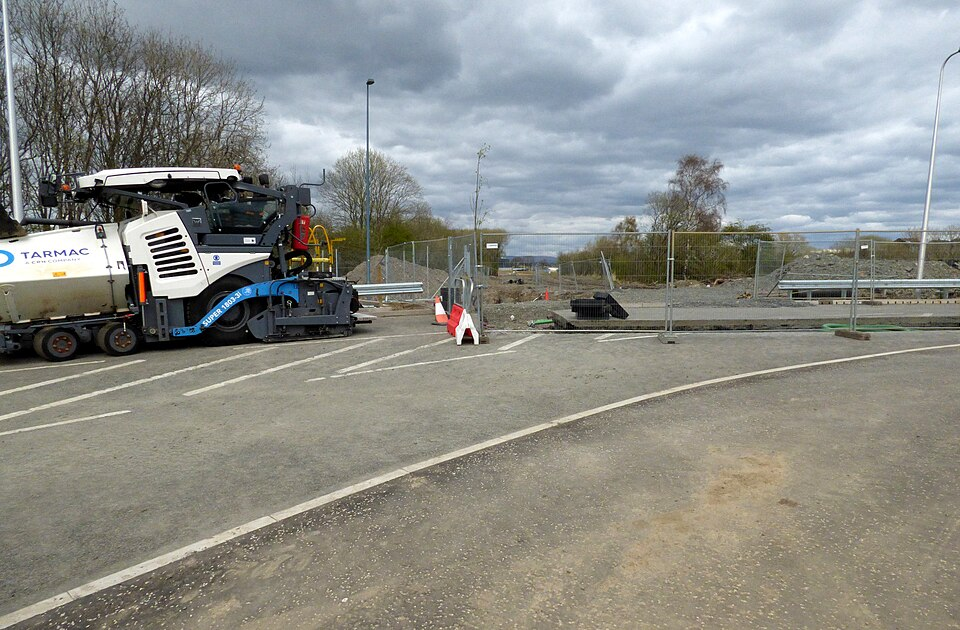
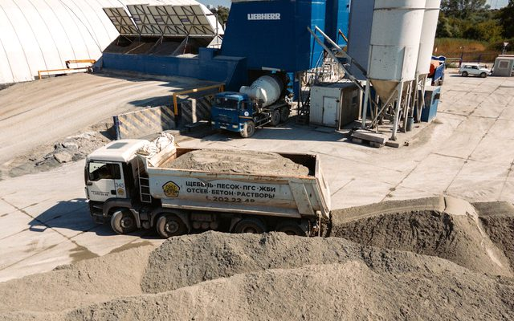
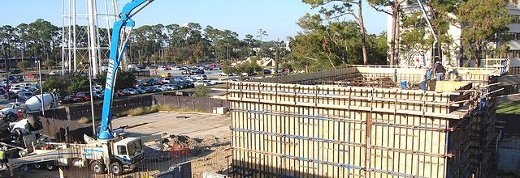
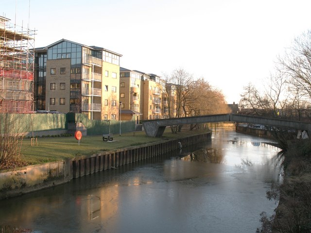
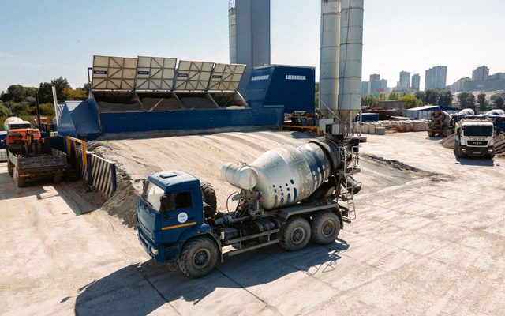
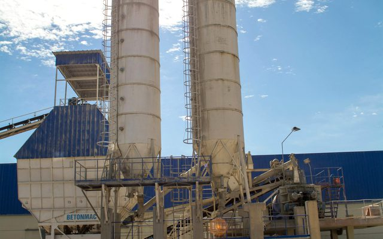
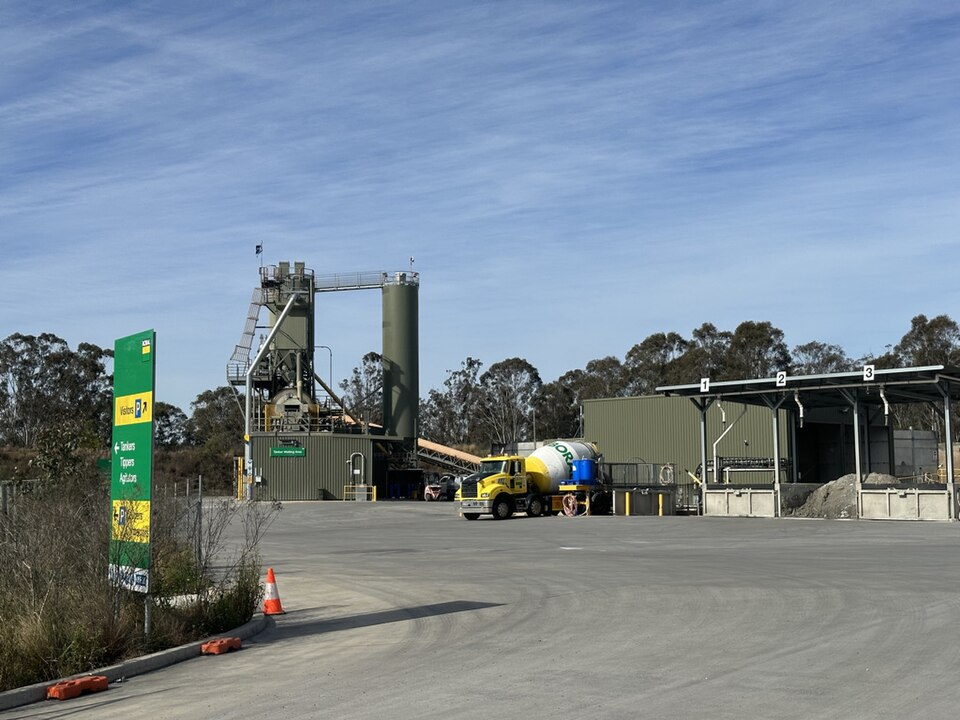
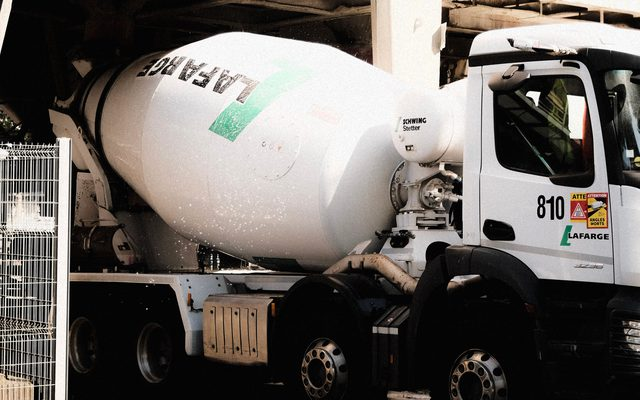
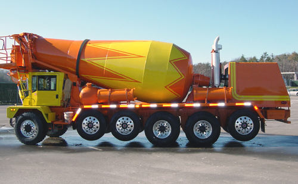
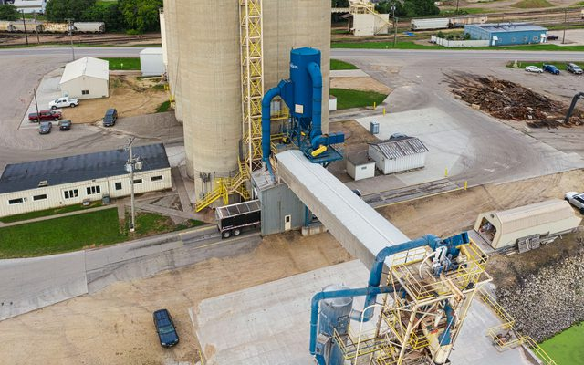
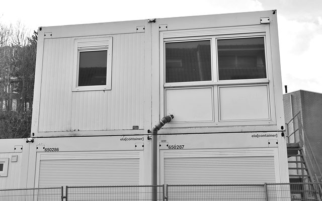
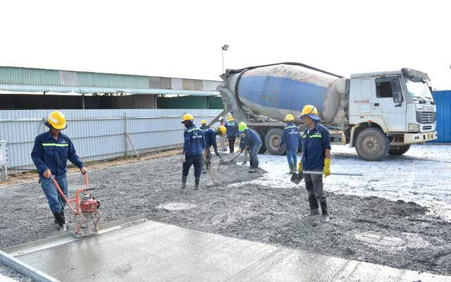
Links open external websites. Coal Controller Organisation does not endorse third-party content.


.png)
Disclaimer: Inclusion of an agency on this list does not constitute endorsement, empanelment, or recommendation by the Coal Controller Organisation or the Ministry of Coal, Government of India. Mine owners and project proponents are advised to conduct their own due diligence process before engaging any agency.
Specialist in ready-mix concrete plant setup, concrete operations management, and infrastructure project execution.
Experienced in ready-mix concrete plant development, operational management, and quality concrete production for construction projects.
Expert in RMC plant certification, plant audits, quality management systems, and advisory for new plant setups.
Disclaimer: Inclusion of an expert does not constitute endorsement, empanelment, or recommendation by the Coal Controller Organisation or the Ministry of Coal, Government of India. Users are advised to independently verify credentials and suitability before engaging any individual.